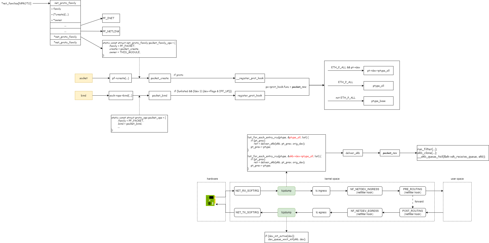

tcpdump
1. strace看下系统调用
# tcpdump -i enp0s8 -nnev -c 1
socket(AF_PACKET, SOCK_RAW, htons(0 /* ETH_P_??? */)) = 4
bind(4, {sa_family=AF_PACKET, sll_protocol=htons(0 /* ETH_P_??? */), sll_ifindex=if_nametoindex("enp0s8"), sll_hatype=ARPHRD_NETROM, sll_pkttype=PACKET_HOST, sll_halen=0}, 20) = 0
# tcpdump -i any -nnev -c 1
socket(AF_PACKET, SOCK_DGRAM, htons(0 /* ETH_P_??? */)) = 4
bind(4, {sa_family=AF_PACKET, sll_protocol=htons(ETH_P_ALL), sll_ifindex=0, sll_hatype=ARPHRD_NETROM, sll_pkttype=PACKET_HOST, sll_halen=0}, 20) = 0
为什么会是这样的呢？libpcap代码中给了解释：
/*
* Open a socket with protocol family packet. If cooked is true,
* we open a SOCK_DGRAM socket for the cooked interface, otherwise
* we open a SOCK_RAW socket for the raw interface.
*
* The protocol is set to 0. This means we will receive no
* packets until we "bind" the socket with a non-zero
* protocol. This allows us to setup the ring buffers without
* dropping any packets.
*/
sock_fd = is_any_device ?
socket(PF_PACKET, SOCK_DGRAM, 0) :
socket(PF_PACKET, SOCK_RAW, 0);
2. 基础知识说明
/* Supported address families. */
#define AF_UNSPEC 0
#define AF_UNIX 1 /* Unix domain sockets */
#define AF_INET 2 /* Internet IP Protocol */
#define AF_PACKET 17 /* Packet family */
/* Protocol families, same as address families. */
#define PF_UNSPEC AF_UNSPEC
#define PF_UNIX AF_UNIX
#define PF_LOCAL AF_LOCAL
#define PF_INET AF_INET
#define PF_PACKET AF_PACKET
/**
* enum sock_type - Socket types
* @SOCK_STREAM: stream (connection) socket
* @SOCK_DGRAM: datagram (conn.less) socket
* @SOCK_RAW: raw socket
* @SOCK_RDM: reliably-delivered message
* @SOCK_SEQPACKET: sequential packet socket
* @SOCK_DCCP: Datagram Congestion Control Protocol socket
* @SOCK_PACKET: linux specific way of getting packets at the dev level.
* For writing rarp and other similar things on the user level.
*/
enum sock_type {
SOCK_STREAM = 1,
SOCK_DGRAM = 2,
SOCK_RAW = 3,
SOCK_RDM = 4,
SOCK_SEQPACKET = 5,
SOCK_DCCP = 6,
SOCK_PACKET = 10,
};
int socket(int domain, int type, int protocol);
int bind(int socket, const struct sockaddr *address, socklen_t address_len);
3. 实现原理
为了实现抓包，tcpdump使用了更底层的地址族 AF_PACKET。使用 socket 跟内核建立通信，内核在数据包路径上的固定位置，将数据包发送到应用层。
